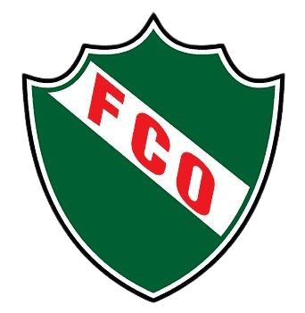

HISTORIA

El Club Atlético Ferro Carril Oeste de General Pico fue fundado el 24 de junio de 1934 por un grupo de padres y vecinos de la Escuela N.º 111, con el objetivo de crear un espacio destinado a la práctica deportiva y al encuentro de los jóvenes de la ciudad. En sus primeros momentos, la institución fue creada bajo el nombre de Club Sportivo Costanero.
Poco tiempo después de su fundación, el Club Sportivo Costanero se fusionó con el Club Talleres. De esta unión surgió el Club Atlético Ferro Carril Oeste, nombre elegido en referencia al ferrocarril que tenía una importante presencia en General Pico y que formaba parte de la vida cotidiana de la ciudad. Desde entonces, los colores verde y blanco comenzaron a identificar a la institución.
Durante sus primeros años, el fútbol se convirtió en una de las principales actividades de Ferro. El club comenzó a participar en las competencias de la Liga Pampeana de Fútbol y fue construyendo una importante trayectoria dentro del deporte regional. Su primer campeonato de Primera División de la Liga Pampeana llegó en 1941, y posteriormente volvió a consagrarse en 1948 y 1960.
A partir de la década de 1970, Ferro Carril Oeste comenzó una etapa de gran crecimiento deportivo. En 1977 obtuvo un nuevo campeonato de la Liga Pampeana y, pocos años después, consiguió una serie de títulos que lo posicionaron entre los clubes más importantes del fútbol pampeano. Fue campeón nuevamente en 1980, 1981, 1983 y 1984.
La década de 1980 marcó uno de los momentos más importantes de la historia del club. Ferro comenzó a participar en los Torneos Regionales, competencias que permitían a los equipos del interior del país acceder al Campeonato Nacional. Gracias a sus actuaciones, la institución logró llegar al Torneo Nacional de 1984, donde tuvo la oportunidad de enfrentarse con algunos de los equipos más importantes del fútbol argentino.
La participación en el Campeonato Nacional de 1984 representó un acontecimiento histórico para Ferro y para el fútbol de General Pico, ya que permitió que el club compitiera en la máxima categoría del fútbol argentino. En aquella edición se enfrentó a reconocidos equipos del país, llevando el nombre de la ciudad a uno de los escenarios más importantes del fútbol nacional.
Ferro también logró destacarse en el ámbito del fútbol de ascenso. En la segunda mitad de la década de 1980 participó en la Primera B Nacional, convirtiéndose en uno de los primeros clubes pampeanos en alcanzar una competencia de esa importancia. Esta etapa significó un nuevo crecimiento institucional y deportivo para el club.
Con el paso de los años, Ferro continuó sumando títulos en la Liga Pampeana. Entre sus campeonatos más destacados se encuentran los obtenidos en 1992, 1995, 1998, 2005, 2015 y 2018. En total, la Liga Pampeana registra a Ferro Carril Oeste de General Pico como uno de sus clubes más ganadores, con numerosos campeonatos de Primera División.
Además del fútbol, la institución desarrolló diferentes actividades deportivas y sociales, convirtiéndose en un espacio importante para la formación de niños y jóvenes. El club cuenta con fútbol infantil, divisiones inferiores y otras propuestas deportivas que permiten la participación de personas de distintas edades.
Su estadio, conocido como el Coloso del Barrio Talleres, es uno de los escenarios deportivos más reconocidos de General Pico y se encuentra estrechamente relacionado con la historia y la identidad del club. Allí se desarrollaron numerosos encuentros que forman parte de la trayectoria deportiva de Ferro.
A lo largo de más de nueve décadas, el Club Atlético Ferro Carril Oeste se consolidó como una de las instituciones deportivas más importantes de General Pico. Su historia está marcada por el crecimiento, los campeonatos regionales, la participación en competencias nacionales y el fuerte vínculo que mantiene con la comunidad.
Actualmente, Ferro continúa desarrollando actividades deportivas y trabajando en la formación de nuevas generaciones de jugadores. Con su tradicional identidad verde y blanca, el club mantiene vigente una historia que comenzó en 1934 y que forma parte fundamental de la historia deportiva de General Pico y de La Pampa.